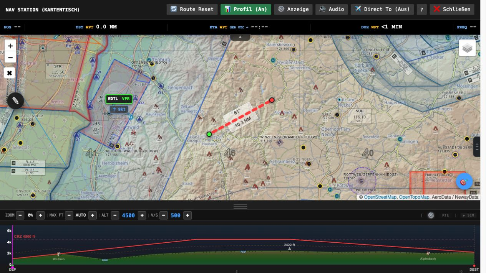

A home for your aircraft.
Place hangar, start point and equipment at your favourite spot. With the tracker and matching object packages your Homebase becomes visible in the simulator. Optionally it becomes an installable start location.
Welcome aboard · For Microsoft Flight Simulator
A good flight idea. A plan that fits. And a companion all the way to landing. The VFR Multitool brings more to your sim flight.
Origin / Alpha · In the browser · On the tablet · In the MSFS 2024 cockpit

01 / An idea becomes a job
No destination for your next flight? Choose your departure airfield, your aircraft and what you feel like. The dispatcher turns it into a matching job with briefing and route.
02 / Your digital map table
See route, terrain, airspace and weather together. Move waypoints, measure distances and tailor the flight to your aircraft.
The elevation profile shows your flight from the side: terrain, obstacles, airspace and weather along the route.
Airfield info, weather reports, frequencies and a navigation log complete your briefing. Flight plan and PDF go with you.
You don’t need a job. With “Direct To” you set your own destination and use map and planning completely independently of missions.
03 / The link to your simulator
The Windows tracker connects Microsoft Flight Simulator with the Multitool. Your planning becomes a companion that knows where you are flying right now.
Position, altitude, heading and traffic from the simulator appear on the map. On the PC just as on your tablet or second device.
Map, elevation profile, mission overview and tools are also available through the EFB app and the toolbar panel – handy when flying in VR.
The tracker manages updates and optional cockpit and Homebase packages. If you like, it also starts your programs for the flying evening.
04 / Your place in the flying world
Design your own base, keep flight ideas or plan the next trip together with your crew.
Place hangar, start point and equipment at your favourite spot. With the tracker and matching object packages your Homebase becomes visible in the simulator. Optionally it becomes an installable start location.
Keep routes and jobs on your pinboard. On the crew board you share flights and notes within the group. With cloud sync enabled, your pilot ID brings saved content to other devices too.
Optional passenger voices, events and audio cues come along. In the tracker you can pause or lower the output during radio calls.
Checklists, stopwatch, flight calculator and E6B help every day. On the map you can draw, measure and leave your own notes.
Save your aircraft values as presets and choose your interface: Modern, Analog, NavCom, Ops 1940 or Win95.
From our small workshop
AI helped a lot in building the Multitool. I personally put a lot of time, care and heart into the project to create something beautiful and useful for our flying evenings.
Several people from the community tinker with me on our shared dream tool: we collect ideas, try things out, test and keep refining. Your wishes and feedback are part of it. I like to listen and pick up suggestions that move us forward together.
Your idea is welcomeYour first flight
Open the Multitool in the browser. Enter your departure airfield and pick an aircraft preset or your own values.
Have a job created and check the briefing. Or open the map table and plan your own free flight.
Set up pilot ID and PIN and sign in to the Windows tracker with them. For flights on a second device you use the same identity.
Good to know
You can already use flight ideas, briefings and map planning in the browser. For the live connection to the simulator, the cockpit integration and simulator scenes you need the Windows tracker. Some extra features need matching packages.
No. The Multitool offers flight planning and locally generated jobs without AI too. For AI briefings and AI voices you need your own provider key depending on the feature; the provider may charge for it.
Yes. Use “Direct To” or “Free flight/planning”. You get navigation and planning tools without having to start a mission.
The interface can be switched to English in the settings. Missions, briefings, passenger voices and some screenshots are still German for now; English versions are on the way.
The guided setup takes you from the first login to the first flight. In the app, the tutorial and the help are there for you too. More detailed explanations are in the guide. For ideas and feedback there is the Discord community.